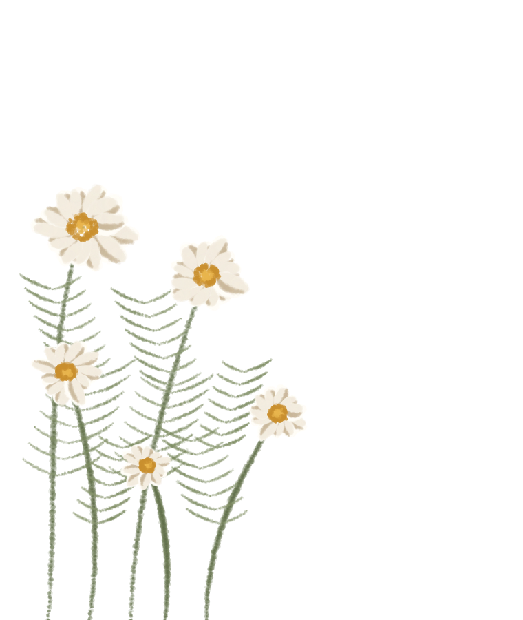
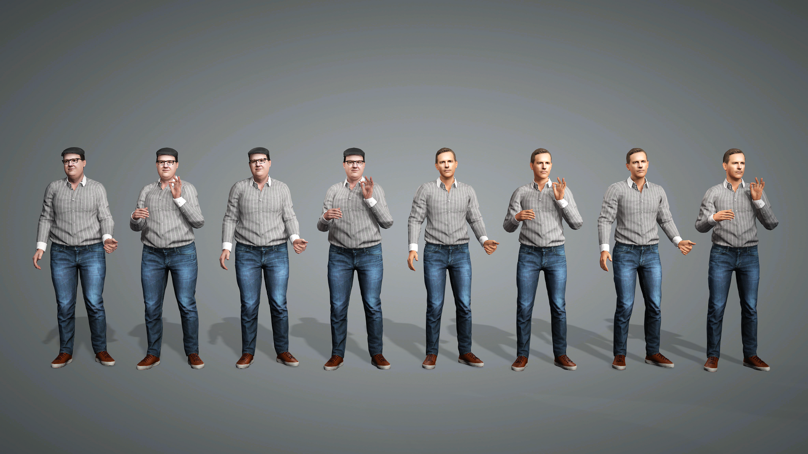
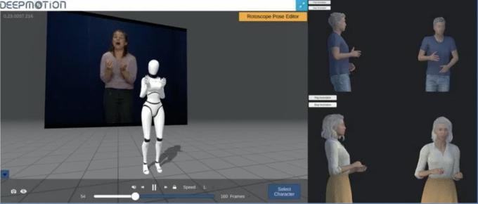
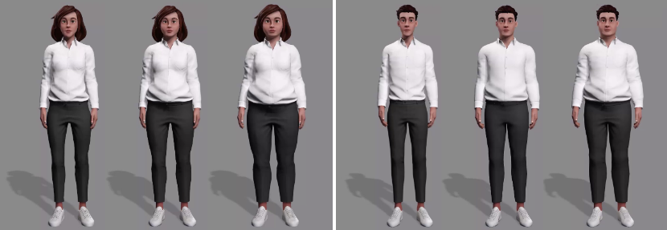
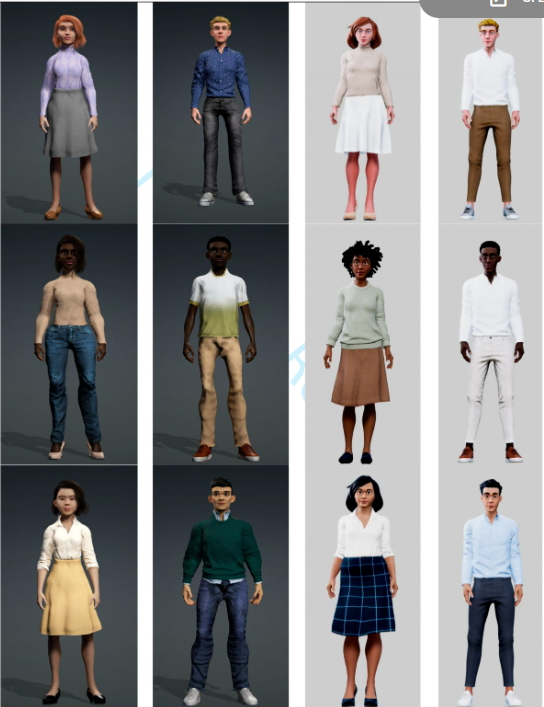

01
Familiarity in Virtual Agents
Investigating how familiarity in a virtual agent's appearance, voice, and motion shapes how people perceive the agent.
ACM SAP 2026 · Perception study
I research embodied virtual agents and behavioral animation to convey personality, emotion, and social presence through movement and performance.


Investigating how familiarity in a virtual agent's appearance, voice, and motion shapes how people perceive the agent.
ACM SAP 2026 · Perception study
Exploring how affective gestures and behavioral motion influence emotional perception in animated pedagogical agents, using gestures from the GEMEP dataset.
Perception study · Character animation
Studying how body shape, voice, and behavioral appearance affect perceived believability and audio-visual correspondence in virtual humans.
ACM SAP 2023 · Empirical study
Examining how learners recognize and relate to the race/ethnicity and gender of animated pedagogical agents in educational settings.
Journal of Educational Computing Research, 2024I'm always happy to talk about virtual humans, animation research, or potential collaborations.